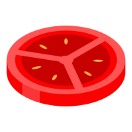

<div aria-live="polite" aria-atomic="true" class="d-flex justify-content-center align-items-center w-100">
  <div class="toast" [ngClass]="{ 'show': showToast }" role="alert" aria-live="assertive" aria-atomic="true">
    <div class="toast-header">
      
      <strong class="me-auto">{{toast.title}}</strong>
      <button type="button" class="btn-close" data-bs-dismiss="toast" aria-label="Close"></button>
    </div>
    <div class="toast-body">
      {{toast.message}}
    </div>
  </div>
</div>


<div class="container mt-5">


  <div class="row justify-content-center">

    <div class="col-md-6">

      <div class="card pomocard">
        <div class="card-body">

          <div class="pomotimer text-center">
            <h1>{{ getFormattedTime(timerService.getTime().minutes * 60 + timerService.getTime().seconds) }}</h1>
            <h3>{{ timerStatus }}</h3>

          </div>

          <div class="pomobar">
            <div class="progress mb-3" style="height: 2px;">
              <div class="progress-bar  bg-danger" role="progressbar"
                   [style.width]="progressValue + '%'" [attr.aria-valuenow]="progressValue" aria-valuemin="0"
                   aria-valuemax="100">
              </div>
            </div>
          </div>

          <div class="pomobtn text-center">

            <button class="btn btn-lg m-2 rounded-pill" (click)="startTimer()" *ngIf="!timerService.isRunning">
              <i class="fa-solid fa-play"></i>
              <span>Start</span>
            </button>
            <button class="btn btn-lg m-2 rounded-pill btn-pause" (click)="pauseTimer()" *ngIf="timerService.isRunning">
              <i class="fa-solid fa-pause"></i>
              <span>Pause</span>
            </button>
            <button class="btn btn-lg rounded-pill" (click)="skipTimer()" *ngIf="!timerService.isRunning">
              <i class="fa-solid fa-forward"></i>
              <span>Skip</span>
            </button>

            <div class="text-center mt-3">
              <button class="btn btn-lg m-2 rounded-pill btn-reset" (click)="resetTimer()">
                <i class="fa-solid fa-arrows-rotate"></i>
              </button>
            </div>
          </div>

        </div>
      </div>

      <div class="card mt-3 bg-transparent stat-card border-0">
        <div class="card-body p-0">
          <!-- round and goal -->
          <div class="d-flex justify-content-between">
            <div class="stat-box">
              <span class="icon-bar">
                <i class="fa-solid fa-circle-notch"></i>
              </span>

              <span class="text">{{ counters.pomodoro }} / {{ counters.round}}</span>
              <span class="title">Round</span>
            </div>

            <div class="stat-box">
              <span class="icon-bar">
                <i class="fa-solid fa-bullseye"></i>
              </span>

              <span class="text">{{ counters.goal }} /  {{ counters.dailyGoal }}</span>
              <span class="title">Goal</span>
            </div>

          </div>
        </div>
      </div>
    </div>
  </div>
</div>

<div>
  Timer: {{ count }}
</div>
